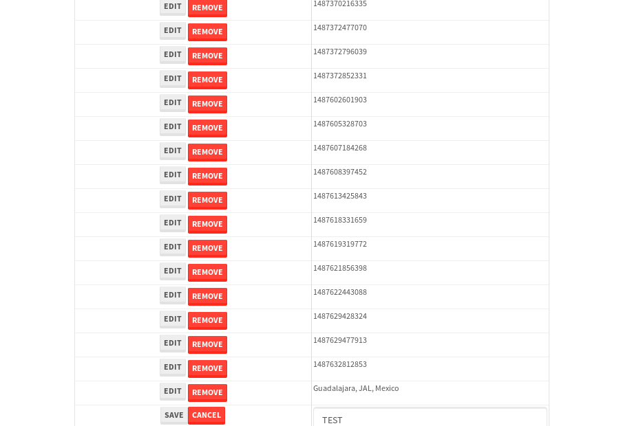
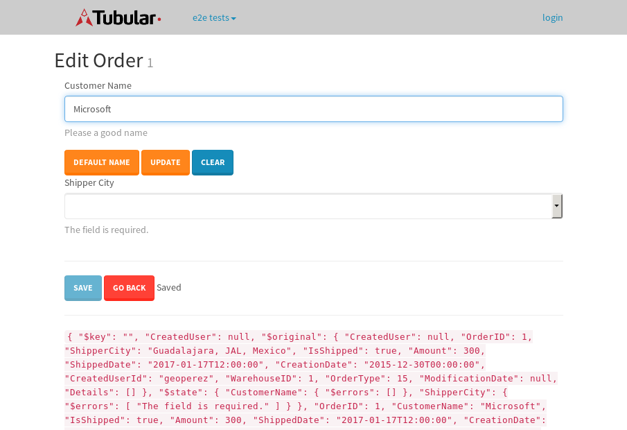

tbColumn.Grid Sorting - 27.37sTests: 5Skipped: 0Failures: 0 should sort data in ascending order then on descending order when sorting by Order Id column - 5.647sTests passed: 100.00%should order data in ascending order when click-sorting an unsorted text column - 5.105sTests passed: 100.00%should order data in descending order when click-sorting an ascending-sorted text column - 5.811sTests passed: 100.00%should order data in ascending order when click-sorting an unsorted date column - 5.419sTests passed: 100.00%should order data in descending order when click-sorting twice an unsorted date column - 5.386sTests passed: 100.00%
tbSingleForm.Form validations - 2.204sTests: 2Skipped: 0Failures: 0 should have an empty required field - 1.211sTests passed: 100.00%should not be able to click on save - 0.993sTests passed: 100.00%
Tubular Filters.tbColumnFilter - 108.376sTests: 12Skipped: 0Failures: 0 should cancel filtering when clicking outside filter-popover - 9.244sTests passed: 100.00%should disable Value text-input for "None" filter - 6.774sTests passed: 100.00%should disable apply button for "None" filter - 7.076sTests passed: 100.00%should decorate popover button when showing data is being filtered for its column - 11.975sTests passed: 100.00%should correctly filter data for the "Equals" filtering option - 8.669sTests passed: 100.00%should correctly filter data for the "Not Equals" filtering option - 8.62sTests passed: 100.00%should correctly filter data for the "Contains" filtering option - 8.544sTests passed: 100.00%should correctly filter data for the "Not Contains" filtering option - 8.562sTests passed: 100.00%should correctly filter data for the "Starts With" filtering option - 6.902sTests passed: 100.00%should correctly filter data for the "Not Starts With" filtering option - 6.924sTests passed: 100.00%should correctly filter data for the "Ends With" filtering option - 6.92sTests passed: 100.00%should correctly filter data for the "Not Ends With" filtering option - 6.938sTests passed: 100.00%
Tubular Filters.tbColumnDateTimeFilter - 136.264sTests: 12Skipped: 0Failures: 0 should cancel filtering when clicking outside filter-popover - 7.343sTests passed: 100.00%should disable Value text-input for "None" filter - 6.509sTests passed: 100.00%should disable apply button for "None" filter - 6.561sTests passed: 100.00%should clear filtering when clicking on Clean button - 18.005sTests passed: 100.00%should decorate popover button when showing data is being filtered for its column - 11.913sTests passed: 100.00%should correctly filter data for the "Equals" filtering option - 6.969sTests passed: 100.00%should correctly filter data for the "Not Equals" filtering option - 7.386sTests passed: 100.00%should correctly filter data for the "Between" filtering option - 12.556sTests passed: 100.00%should correctly filter data for the "Greater-or-equal" filtering option - 11.934sTests passed: 100.00%should corretlly filter data for the "Greater" filtering option - 12.144sTests passed: 100.00%should correctly filter data for the "Less-or-equal" filtering option - 12.105sTests passed: 100.00%should correctly filter data for the "Less" filtering option - 12.218sTests passed: 100.00%
Tubular Filters.tbColumnOptionsFilter - 81.963sTests: 3Skipped: 0Failures: 0 should cancel filtering when clicking outside filter-popover - 8.831sTests passed: 100.00%should decorate popover button when showing data is being filtered for its column - 12.23sTests passed: 100.00%should filter column-elements in accordance to the selected filter when selecting a single option - 49.958sTests passed: 100.00%
Tubular Filters.tbTextSearch - 48.932sTests: 5Skipped: 0Failures: 0 min-chars is not set - 1.021sTests passed: 100.00%should filter data in searchable-column customer name to matching inputted text, starting from 3 characters - 6.889sTests passed: 100.00%should filter data in searchable-column shipper city to matching inputted text, starting from 3 characters - 12.28sTests passed: 100.00%should show clear button when there is inputted text only - 6.877sTests passed: 100.00%should clear filtering when clicking clear button - 16.346sTests passed: 100.00%
tbForm related components.tbCheckboxField - 6.202sTests: 2Skipped: 0Failures: 0 should save changes on "SAVE" - 2.717sTests passed: 100.00%should discard changes on "CANCEL" - 2.24sTests passed: 100.00%
tbForm related components.tbDropDownEditor - 11.981sTests: 5Skipped: 0Failures: 0 should set initial input value to the value of "value" attribute when defined - 1.798sTests passed: 100.00%should show the component name value in a label field when "showLabel" attribute is true - 1.755sTests passed: 100.00%should show a help field equal to this attribute, is present - 2.001sTests passed: 100.00%should submit modifications to item/server when clicking form "Save" - 3.581sTests passed: 100.00%should NOT submit modifications to item/server when clicking form "Cancel" - 2.236sTests passed: 100.00%
tbForm related components.tbTextArea - 17.517sTests: 7Skipped: 0Failures: 0 should set initial input value to the value of "value" attribute when defined - 2.474sTests passed: 100.00%should be invalidated when the number of chars is not in the range of "min" and "max" attributes - 2.177sTests passed: 100.00%should show the component name value in a label field when "showLabel" attribute is true - 1.63sTests passed: 100.00%should show a help field equal to this attribute, is present - 1.794sTests passed: 100.00%should require the field when the attribute "required" is true - 2.541sTests passed: 100.00%should submit modifications to item/server when clicking form "Save" - 3.336sTests passed: 100.00%should NOT submit modifications to item/server when clicking form "Cancel" - 2.729sTests passed: 100.00%
tbForm related components.tbDateEditor - 13.704sTests: 6Skipped: 0Failures: 0 should set initial date value to the value of "value" attribute when defined - 1.693sTests passed: 100.00%should be invalidated when the date is not in the range of "min" and "max" attributes - 2.309sTests passed: 100.00%should show the component name value in a label field when "showLabel" attribute is true - 1.998sTests passed: 100.00%should show a help field equal to this attribute, is present - 1.906sTests passed: 100.00%should submit modifications to item/server when clicking form "Save" - 2.335sTests passed: 100.00%should NOT submit modifications to item/server when clicking form "Cancel" - 2.602sTests passed: 100.00%
tbForm related components.tbTypeaheadEditor - 16.16sTests: 7Skipped: 0Failures: 0 should show an options list when there is an API-info/component entered-data - 2.073sTests passed: 100.00%should select the option clicked - 2.236sTests passed: 100.00%should show a "delete" button when an option/match is selected, and delete the option if button is clicked - 2.457sTests passed: 100.00%should show a label value equal to the component name when "showLabel" attribue is true - 1.77sTests passed: 100.00%should require a value when "require" attribute is true - 1.961sTests passed: 100.00%should submit modifications to item/server when clicking form "Save" - 2.983sTests passed: 100.00%should NOT submit modifications to item/server when clicking form "Cancel" - 2.088sTests passed: 100.00%
tbForm related components.tbSimpleEditor - 21.074sTests: 9Skipped: 0Failures: 0 should set initial input value to the value of "value" attribute when defined - 1.818sTests passed: 100.00%should be invalidated when the number of chars is not in the range of "min" and "max" attributes - 2.185sTests passed: 100.00%should show the component name value in a label field when "showLabel" attribute is true - 1.739sTests passed: 100.00%should set input placeholder to the value of "placeholder" attribute - 2.399sTests passed: 100.00%should validate the control using the "regex" attribute, if present - 1.881sTests passed: 100.00%should show a help field equal to this attribute, is present - 1.714sTests passed: 100.00%should require the field when the attribute "required" is true - 1.962sTests passed: 100.00%should submit modifications to item/server when clicking form "Save" - 4.148sTests passed: 100.00%should NOT submit modifications to item/server when clicking form "Cancel" - 2.115sTests passed: 100.00%
tbForm related components.tbNumericEditor - 16.52sTests: 7Skipped: 0Failures: 0 should set initial component value to the value of "value" attribute when defined - 1.914sTests passed: 100.00%should be invalidated when the entered number is not in the range of "min" and "max" attributes - 2.214sTests passed: 100.00%should show the component name value in a label field when "showLabel" attribute is true - 1.929sTests passed: 100.00%should show a help field equal to this attribute, is present - 1.898sTests passed: 100.00%should require the field when the attribute "required" is true - 2.134sTests passed: 100.00%should submit modifications to item/server when clicking form "Save" - 3.391sTests passed: 100.00%should NOT submit modifications to item/server when clicking form "Cancel" - 2.052sTests passed: 100.00%
tbForm Connection Error NoModelKey - 2.913sTests: 1Skipped: 0Failures: 0 tbForm connection error functionality - 0.507sTests passed: 100.00%
tbForm Connection Error NoServerUrl - 3.777sTests: 1Skipped: 0Failures: 0 tbForm connection error functionality - 0.564sTests passed: 100.00%
tbGridComponents - 32.294sTests: 6Skipped: 0Failures: 4 should add item with newRow method - 4.591sExpected 'EDIT REMOVE TEST' not to be 'EDIT REMOVE TEST'.✗Tests passed: 50.00%should add item with newRow method and cancel action - 1.127sTests passed: 100.00%should update item with tbSaveButton - 1.746sExpected '' to be 'TEST'.✗Tests passed: 0.00%should NOT update item on cancel Update action - 1.043sFailed: ElementNotVisibleError✗Tests passed: 0.00%should remove item with tbRemoveButton - 21.265sExpected 68 not to be 68, 'should remove the row from the table'.✗Tests passed: 50.00%should NOT remove item on cancel Remove action - 1.069sTests passed: 100.00%
tbGridPager.navigation buttons - 9.674sTests: 1Skipped: 0Failures: 0 should perform no action when clicking on the numbered navigation button corresponding to the current-showing results page - 1.317sTests passed: 100.00%
tbGridPager.navigation buttons.first/non-last results page related functionallity - 4.122sTests: 2Skipped: 0Failures: 0 should disable "first" and "previous" navigation buttons when in first results page - 1.853sTests passed: 100.00%should enable "last" and "next" navigation buttons when in a results page other than last - 2.269sTests passed: 100.00%
tbGridPager.navigation buttons.last/non-first results page related functionallity - 4.235sTests: 2Skipped: 0Failures: 0 should disable "last" and "next" navigation buttons when in last results page - 2.39sTests passed: 100.00%should enable "first" and "previous" navigation buttons when in a results page other than first - 1.844sTests passed: 100.00%
tbGridPager.page navigation - 8.35sTests: 5Skipped: 0Failures: 0 should go to next results page when clicking on next navigation button - 1.485sTests passed: 100.00%should go to previous results page when clicking on previous navigation button - 2.248sTests passed: 100.00%should go to last results page when clicking on last navigation button - 1.833sTests passed: 100.00%should go to first results page when clicking on first navigation button - 1.482sTests passed: 100.00%should go to corresponding results page when clicking on a numbered navigation button - 1.3sTests passed: 100.00%
tbGridPagerInfo - 4.795sTests: 2Skipped: 0Failures: 0 should show text in accordance to numbered of filter rows and current results-page - 1.716sTests passed: 100.00%should show count in footer - 0.593sTests passed: 100.00%
tbHttp - 19.664sTests: 8Skipped: 1Failures: 0 should be authenticated - 4.531sTests passed: 100.00%retrieve data - 2.421sTests passed: 100.00%should not login bad credentials - 2.307sTests passed: 100.00%should have a refresh token - 2.403sTests passed: 100.00%should remove authentication - 2.34sTests passed: 100.00%get method-Is not authenticated - 2.391sTests passed: 100.00%post method-Is not authenticated - 3.27sTests passed: 100.00%should regenerate access token on post - 0s***Skipped***Tests passed: 0%
tbPageSizeSelctor - 10.287sTests: 4Skipped: 0Failures: 0 should filter up to 10 data rows per page when selecting a page size of "10" - 2.18sTests passed: 100.00%should filter up to 20 data rows per page when selecting a page size of "20" - 1.568sTests passed: 100.00%should filter up to 50 data rows per page when selecting a page size of "50" - 2.733sTests passed: 100.00%should filter up to 100 data rows per page when selecting a page size of "100" - 2.326sTests passed: 100.00%
tbRowSelectable - 9.598sTests: 2Skipped: 0Failures: 0 selected rows - 5.114sTests passed: 100.00%unselected rows - 2.901sTests passed: 100.00%
tbSingleForm - 21.48sTests: 8Skipped: 0Failures: 1 should load correct info - 2.553sTests passed: 100.00%should change customer name - 2.74sTests passed: 100.00%should save it - 2.629sFailed: Element is not enabled✗Tests passed: 0.00%should clear the inputs - 2.652sTests passed: 100.00%should update - 2.92sTests passed: 100.00%should reset editor - 2.371sTests passed: 100.00%should not save if not Changes - 2.767sTests passed: 100.00%should not be able to click on save - 2.847sTests passed: 100.00%


{kind=link}
{kind=link}